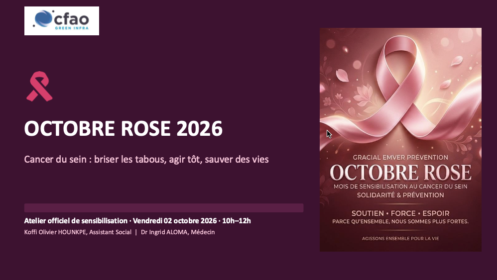
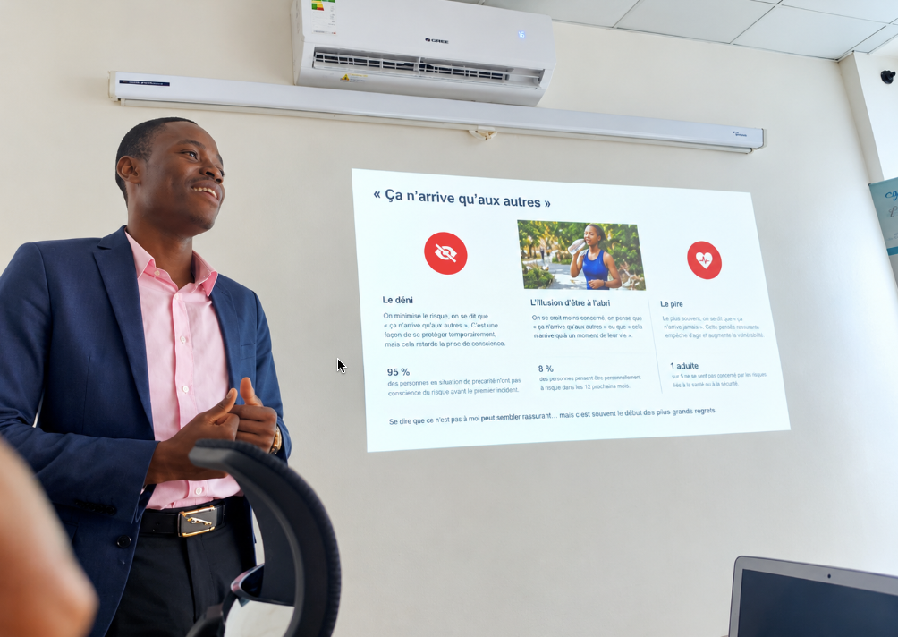
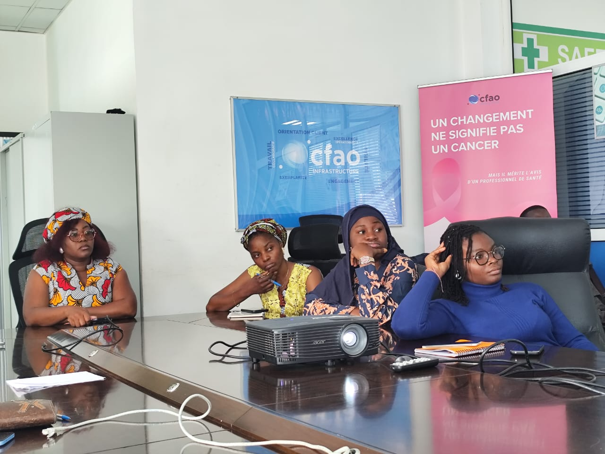
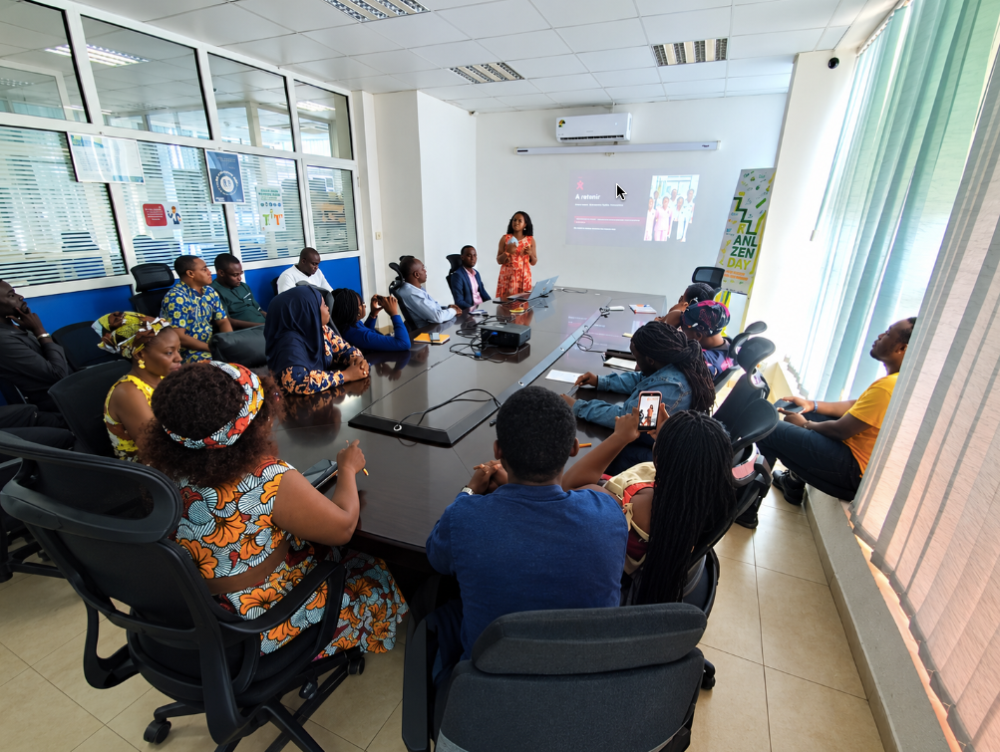

1. Le Contexte : Pourquoi porter ce sujet au sein de CFAO Green Infra ?
Le cancer du sein demeure le cancer le plus fréquent chez la femme à l'échelle planétaire et la première cause de mortalité féminine par cancer, avec 2,3 millions de nouveaux cas diagnostiqués chaque année [1]. Au cours de son existence, 1 femme sur 8 sera concernée [2].
Pourtant, un message d’espoir fondamental doit guider toute démarche de sensibilisation en entreprise : détecté à un stade précoce (tumeur inférieure à 2 cm), le cancer du sein se guérit dans plus de 90 % des cas [3]. Ce taux atteint même 99 % de survie à 5 ans pour une lésion diagnostiquée à moins de 1 cm [4], grâce à des thérapeutiques moins lourdes et conservatrices.

2. Partie 1 (Animation Sociale) : Déconstruire les résistances invisibles
Le constat de départ est sans appel : près de 68 % des retards de consultation sont imputables à la peur, au déni et aux fausses croyances plutôt qu'à l'absence d'infrastructures de soins [5].
Le piège du déni et l'illusion d'être à l'abri
- • « Je ne ressens rien, je suis en pleine forme » : Rappel que 95 % des tumeurs débutantes ne provoquent aucune douleur [6]. Attendre un symptôme douloureux est un piège.
- • « Il n'y a aucun antécédent dans ma famille » : 85 % des cancers du sein sont sporadiques et surviennent sans antécédent familial connu (les mutations génétiques héréditaires ne pèsent que 5 à 10 %) [7].
- • La peur du diagnostic : Fuir l'examen par anxiété entraîne un retard moyen de consultation de 6 mois [8], réduisant drastiquement les chances de traitement doux.
Les barrières socioculturelles et la pudeur
- • Croyances mystiques : Assimiler la maladie à une malédiction conduit à des pertes de temps critiques vers des décoctions artisanales dont l'efficacité antitumorale est nulle (0 %) [9], alors qu'il s'agit d'une anomalie purement biologique.
- • Pudeur : La réticence à dénuder sa poitrine devant un soignant fait perdre des mois précieux. Un examen clinique dure à peine 15 minutes, dans le strict respect de la confidentialité et de la dignité.
- • Crainte de l'abandon : Aujourd'hui, 80 % des chirurgies conservent le sein entier (tumorectomies) [10] lorsque le dépistage est précoce.
Le rôle déterminant des hommes en entreprise
La lutte contre le cancer du sein n'est pas qu'une affaire de femmes. L'implication du conjoint augmente de +45 % l'adhésion au dépistage [12]. Les managers ont également un rôle clé pour accorder les autorisations d'absence pour les consultations sans friction. Enfin, les hommes possèdent une glande mammaire et représentent environ 1 % des diagnostics [13].

3. Partie 2 (Axe Médical) : L'éclairage clinique du Dr Ingrid ALOMA
Pour compléter cette déconstruction des freins psychosociaux, le Dr Ingrid ALOMA a partagé les repères biomédicaux fondamentaux :
• La fenêtre d'opportunité : Il faut en moyenne 1 à 5 ans pour qu'une cellule initiale évolue en un nodule d'un centimètre [14]. C'est une opportunité majeure si les bilans sont annuels.
• Les facteurs évitables : 30 % des cancers du sein sont évitables en modifiant les habitudes de vie [15] (activité physique régulière, équilibre pondéral, réduction drastique de l'alcool et du tabac).
2. Palper (avec la pulpe des 3 doigts, en cercles concentriques jusqu'à l'aisselle) ;
3. Comprimer (vérification de l'absence d'écoulement du mamelon).
• Dédramatiser la palpation : 80 % des anomalies ou boules palpées s'avèrent totalement bénignes (kystes bénins, adénofibromes) [16]. Consulter ne veut pas dire être malade, mais vérifier pour se libérer de l'angoisse.
4. Bilan & Enseignements professionnels
Cette intervention au sein des équipes de CFAO Green Infra a consolidé une conviction centrale de ma pratique :
- La force du tandem médico-social : Le médecin garantit la rigueur clinique ; l'assistant social identifie et lève les freins psychologiques et organisationnels qui bloquent l'accès aux soins.
- L'entreprise comme espace de santé publique : Informer les salariés sur leur lieu de travail génère un réflexe protecteur qui s'étend ensuite à leurs familles et à leurs quartiers.

Références & Sources scientifiques
Besoin d'animer une action de santé dans votre organisation ?
Prévention des risques, accompagnement social des collaborateurs, ateliers QVT : j'interviens au sein de vos équipes pour déployer des actions concrètes et adaptées à vos réalités.